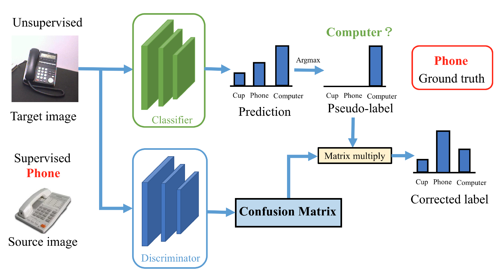

Bio
- I am now a research assistant at Zhejiang University, supervised by Prof. Yi Yang. I received my Master's Degree at Zhejiang University, where I was very fortunate to be advised by Prof. Deng Cai. Before that, I got my Bachelor's Degree at Huazhong University of Science & Technology in Jun. 2017.
- My research interests involve computer vision and machine learning. I hope to make a machine understand nature like a human.
Education
-
Zhejiang University, Hangzhou, ChinaSep. 2017 - Mar. 2020
M.Sc.Eng. in Computer Science, College of Computer Science and Technology
Advisor: Prof. Deng Cai
-
Huazhong University of Science & Technology, Wuhan, ChinaSep. 2013 - Jun. 2017
B.Eng. in Automation (Control System), School of Artificial Intelligence and Automation
Also a member of Intelligence Application Team at Qiming College
Experiences
-
CCAI Lab, Zhejiang University
Mar. 2021 - Present
Research Assistant
Advisor: Prof. Yi Yang
-
Shenzhen Institute of Artificial Intelligence and Robotics for Society,
The Chinese University of HongKong, ShenzhenMay 2020 - Feb. 2021
Research Assistant
Mentor: Asst. Prof. Tin Lun LAM
Publications
|
Towards Better Accuracy-efficiency Trade-offs: Divide and Co-training. , , , , , arXiv, 2021. [arXiv] [code] [project] |
|
|
ES-Net: Erasing Salient Parts to Learn More in Re-Identification. , , , , , IEEE Transactions on Image Processing (TIP), 2021. [arXiv] [tip version] |
|
|
Accelerate Your CNN from Three Dimensions: A Comprehensive Pruning Framework. , , , , , , , , arXiv, 2020. [arXiv] |
|
|  |
Adversarial-Learned Loss for Domain Adaptation. , , , AAAI Conference on Artificial Intelligence (AAAI), 2020. [arXiv] [poster] [code] |
|
Region Mutual Information Loss for Semantic Segmentation. , , , Conference on Neural Information Processing Systems (NeurIPS), 2019. [arXiv] [poster] [code] |
|
|
DBP: Discrimination Based Block-Level Pruning for Deep Model Acceleration. , , , , , arXiv, 2019. [arXiv] |
|
|
Correlation Maximized Structural Similarity Loss for Semantic Segmentation. , , , , arXiv, 2019. [arXiv] |
{kind=link}
{kind=link}
{kind=link}
{kind=link}
{kind=link}
{kind=link}
{kind=link}
Professional activities
- Conference Reviewer: NeurIPS (2020), AAAI (2021), CVPR (2021), ICML (2021), ICCV (2021)
- Journal Reviewer: Neurocomputing, Visual Informatics
Misc.
Last updated at 2021.03.27.